01
Incendios
2026 · Dirección
Wajdi Mouawad · Escena Protocolo · Monterrey.
Teatro, escritura y procesos de creación entre el texto, el actor y la escena.
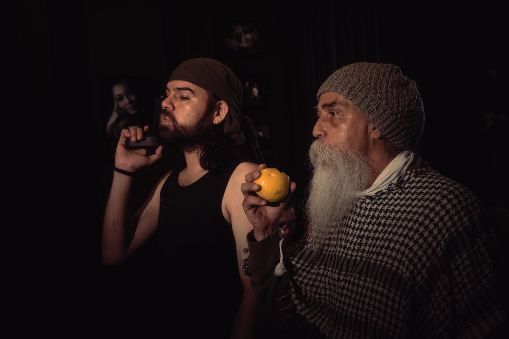
Dirección, dramaturgia y actuación entendidas como una misma práctica: construir una relación precisa entre texto, cuerpo, espacio y tiempo.
Wajdi Mouawad · Escena Protocolo · Monterrey.
Relectura escénica a partir de William Shakespeare.
Dramaturgia documental para Gorguz Teatro. Dirección de Alberto Ontiveros; circulación por CONARTE, UANL y Compañía Nacional de Teatro.
Relectura escénica a partir de William Shakespeare.
David Toscana · Gorguz Teatro · Dirección Alberto Ontiveros.
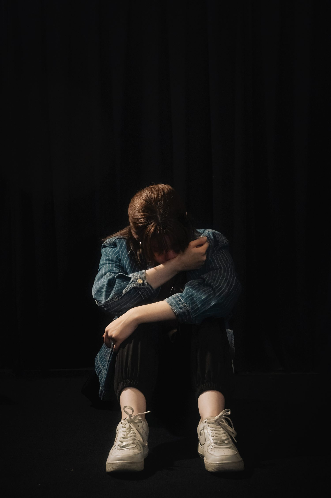
Trabajo sobre la relación entre palabra, cuerpo, memoria y dispositivo escénico.
Creador escénico venezolano radicado en Monterrey. Su práctica cruza dirección, actuación, dramaturgia, adaptación, escritura y formación de intérpretes. Es Licenciado en Arte Teatral por la Universidad Autónoma de Nuevo León (2010–2014).
Su trabajo se desplaza entre creación independiente, instituciones culturales, cine, televisión y pedagogía escénica.
La formación aparece como prolongación del trabajo escénico: espacios reducidos para leer, probar, equivocarse, editar y tomar decisiones.
Espacio semanal de lectura, discusión y producción. Trabajamos estilo, voz, estructura, edición y tradición literaria.
Sesiones uno a uno para cuento, dramaturgia, ensayo, adaptación y textos en proceso.
Procesos continuos para actores: análisis, acción, escucha, presencia, subtexto, espacio y construcción de escena.
Un espacio para convertir una intuición en un proyecto escénico. Partimos de las bases teóricas de la dirección para trabajar mirada, concepto, dramaturgia de la escena, relación con el actor, composición, espacio, imagen, ritmo y construcción de un lenguaje propio. Está dirigido a directores, actores, dramaturgos y creadores que quieran desarrollar una idea o proyecto concreto.
La formación no consiste en acumular recursos. Consiste en aprender a tomar decisiones.
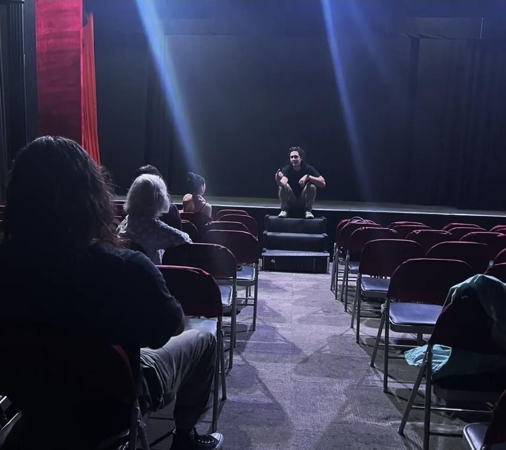
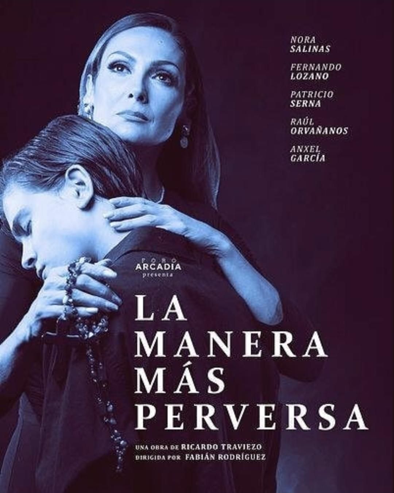
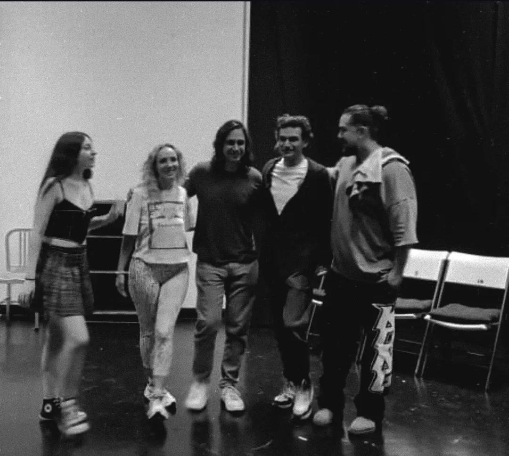
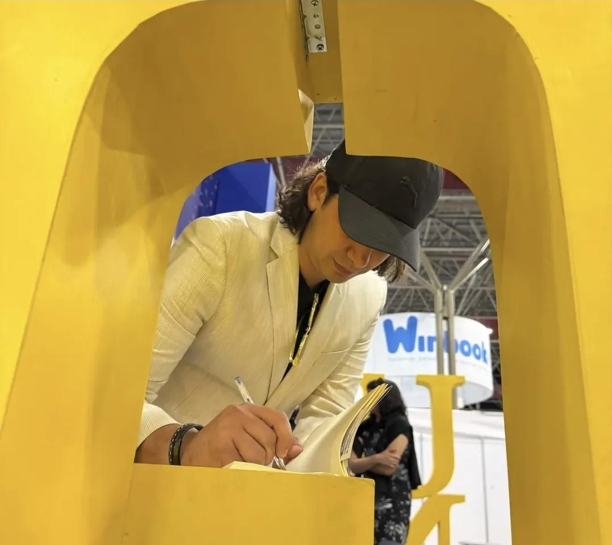
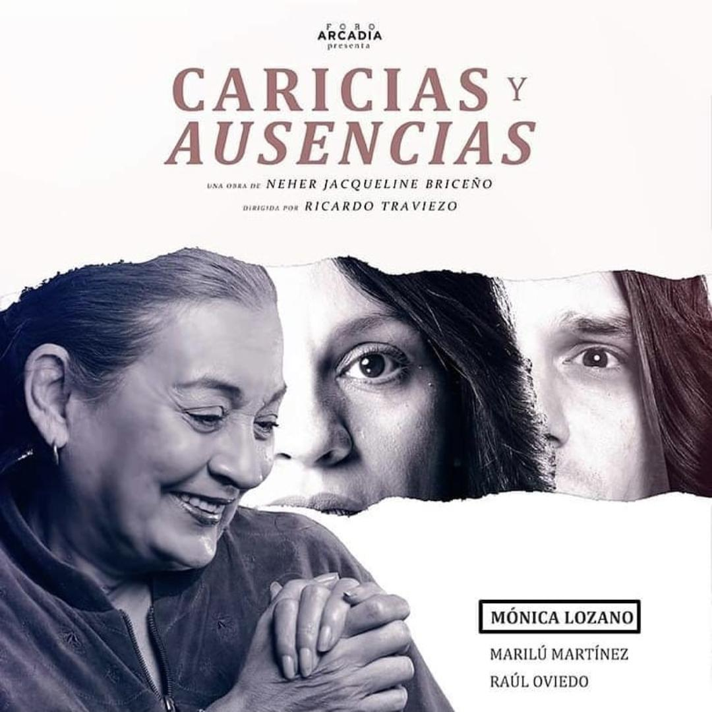
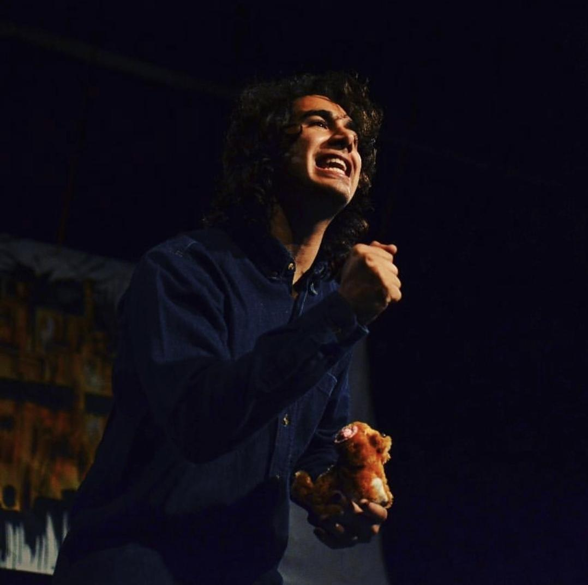
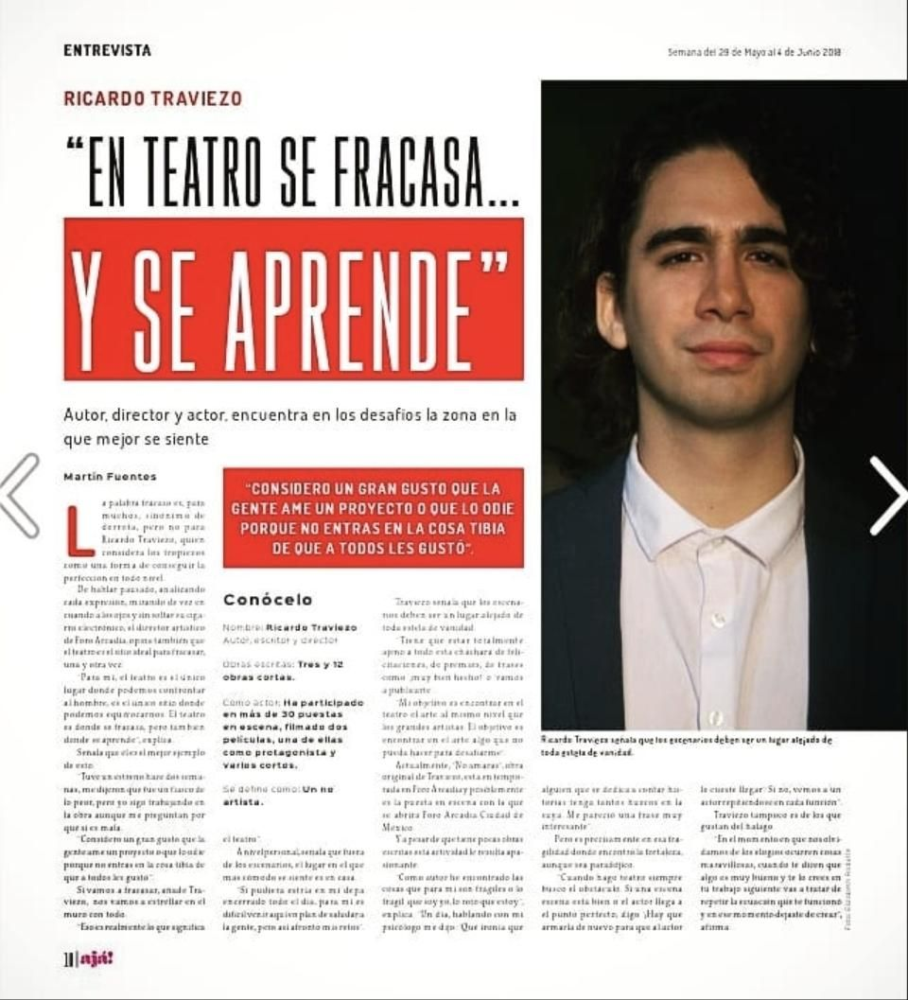
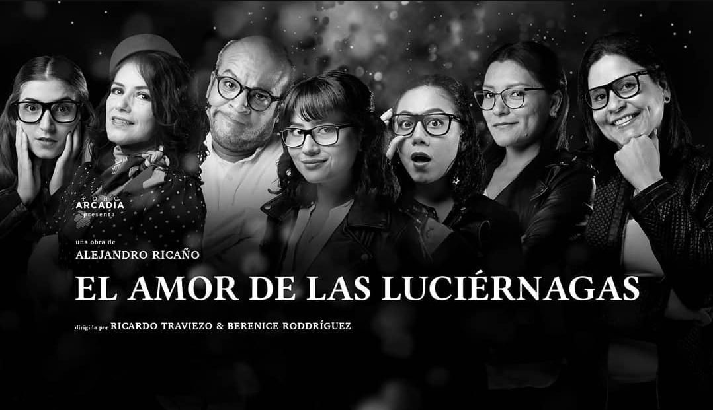
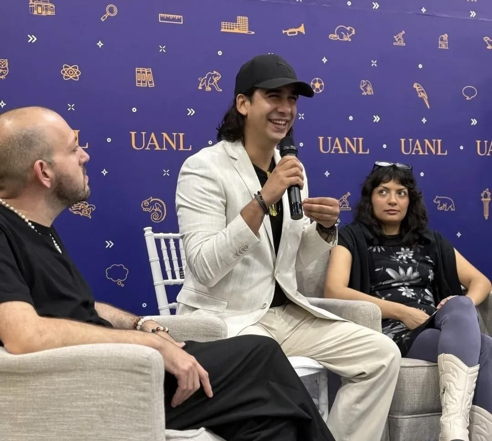
Proyectos, asesorías, formación y colaboraciones.